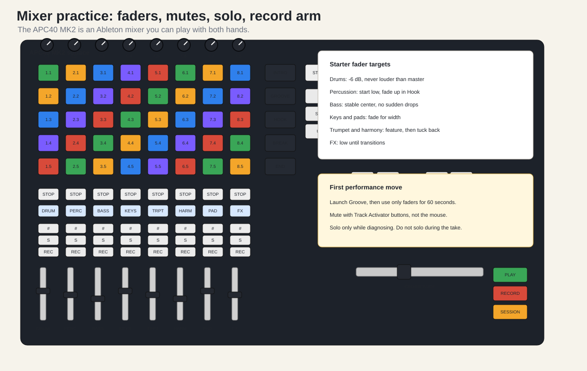

Watch first. Meta Mind Music walkthrough, the mixer controls chapter: https://www.youtube.com/watch?v=hUo2xowjr0U.
The APC40 MK2 becomes much more musical once you stop thinking of it as just a clip launcher. It is also a mixer.
Use faders with the left hand:
Do not slam every fader to the top. A good practice target is:
| Track | Starter fader position |
|---|---|
| Drums | medium-high |
| Percussion | low-medium |
| Bass | medium |
| Keys | medium-low |
| Trumpet/hook | medium, featured only when needed |
| Harmony | lower than lead |
| Pads | low but wide |
| FX | very low except transitions |

The Track Activator button is the mute/unmute button. It has the track number on it. Use it to create arrangement movement.
Practice:
This teaches a crucial APC skill: performance is not only starting clips. It is also removing layers.
Solo is for diagnosis. If bass is too loud, solo bass, adjust, then unsolo. Do not build your normal performance around Solo. Audiences do not need to hear you check a track in isolation.
Record Arm matters when recording into clips. Since this first book is APC-only, use Record Arm later. For now, the APC is mainly launching and mixing clips that already exist.